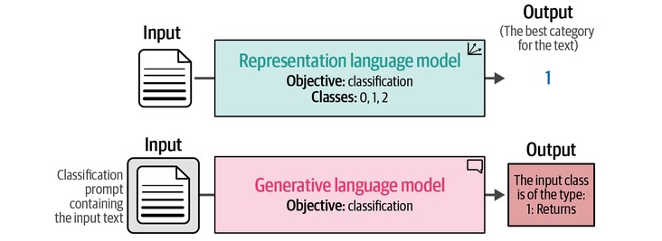
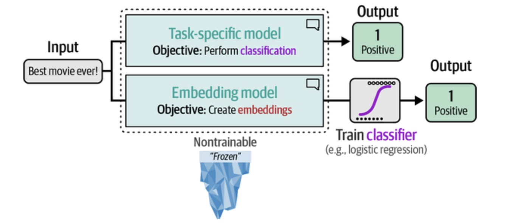
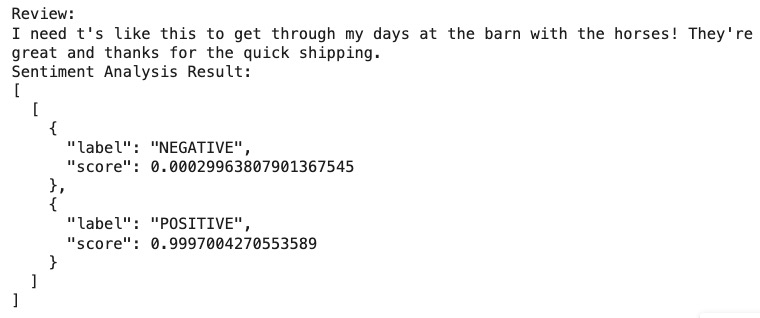

from datasets import load_dataset
# Load our data
data = load_dataset("amazon_polarity")
# Take a random sample of 10k training examples and 2k test examples
train_sample = data["train"].shuffle(seed=42).select(range(10000))
test_sample = data["test"].shuffle(seed=42).select(range(2000))Introduction
Welcome to my first blog post!
I’m currently reading the excellent Hands-On Large Language Models book by Jay Alammar and Maarten Grootendorst. I highly recommend it to anyone looking to up their LLM skills!
In order to get the most out of these kinds of books, I find it’s best to take the code in them and then adapt it to a new dataset. So in that spirit, I’m going to do my own version of Chapter 4, which is all about text classification.
There are many different kinds of LLM. Broadly speaking we can put them into two categories:
Representation models are designed to understand and represent the meaning of text. They convert input into dense embeddings that capture its semantic information. These embeddings can either be used directly for classification or as input to a traditional classifier, depending on the task. These models typically use an encoder-only architecture, and notable examples include BERT, RoBERTa, and Sentence-BERT.
Generative models, on the other hand, focus on generating new text. They are trained to predict the next word in a sequence, allowing them to produce text that resembles the training data. For classification, they can be adapted by using a carefully crafted prompt that guides them to generate a response corresponding to the class label. Generative models use either decoder-only or encoder-decoder architectures. Examples include the GPT family (including ChatGPT), Flan-T5, and even DALL-E for image generation.
The difference between the two is shown in Figure 1. In this blog post we’ll focus on representation models, and in part 2 we’ll look at generative models.

Text classification with representation models
When used for classification tasks, representation models can be broadly divided into:
Task-Specific Models: These models involve starting with a general-purpose pre-trained model (such as BERT) and fine-tuning it directly for a specific task, such as sentiment classification. They take the input text and output the class label directly, making it a one-step process that is optimised for classification.
Embedding Models: These models are fine-tuned to generate embeddings that capture the meaning of the text. The embeddings are then used as input features for a separate, traditional classifier (e.g., logistic regression) to predict the class label. So this can be thought of as a two-step process: first, encode the text, and secondly classify it with a simpler model.
Figure 2 illustrates these two approaches.

The data
The dataset we will use is the Amazon Polarity Dataset. This dataset contains reviews from Amazon, categorised as either positive or negative sentiment. Each entry consists of a title, the review text, and the associated sentiment label.
We start by loading the data and splitting into a training and test set (no need for a validation set here as we won’t be tuning any hyperparameters):
Let’s check how many positive and negative labels we have in each set:
from collections import Counter
# Count the number of occurrences of each label in the training and test data
label_counts = Counter(train_sample["label"])
print(f"Label Counts in Training Set: {label_counts}")
label_counts = Counter(test_sample["label"])
print(f"Label Counts in Test Set: {label_counts}")Label Counts in Training Set: Counter({0: 5003, 1: 4997})
Label Counts in Test Set: Counter({1: 1018, 0: 982})So we have a balanced dataset. A label of 1 indicates a positive review, and 0 a negative review.
Let’s take a quick look at a couple of examples to understand the structure of the dataset:
# import json
# print(json.dumps(train_sample[0], indent=4))
# print(json.dumps(train_sample[5], indent=4))
print(train_sample[0])
print(train_sample[2]){'label': 0, 'title': 'Anyone who likes this better than the Pekinpah is a moron.', 'content': "All the pretty people in this film. Even the Rudy character played by Michael Madsen. This is adapted from a Jim Thompson novel for cryin' out loud! These are supposed to be marginal characters, not fashion models. Though McQueen and McGraw were attractive (but check out McQueen's crummy prison haircut) they were believable in the role. Baldwin and Bassinger seem like movie stars trying to act like hard cases. Action wise, the robbery scene in the Pekinpah version was about 100 times more exciting and suspenseful than anything in this re-make."}
{'label': 1, 'title': 'Spaetzle Noodles', 'content': "This type of spaetzle maker is easier to manuveur than the old press kind and much easier on the hands. The difference is that this new spaetzle maker makes smaller noodles than the old. It is great for us elderly that don't have much strength left."}So each review is a dictionary containing a label, title and content key.
1. Task-specific model
Selecting the model
So which LLM should we use? As of now, there are over 60,000 models available on Hugging Face for text classification and 8,000 for embeddings. As ever with LLMs, picking the right one involves a trade-off between size and performance.
As mentioned earlier, BERT is a popular architecture for creating both task-specific and embedding models. Many variations of it are now available. In the book they used one calledRoBERTa, but here we will use a variation of DistilBERT called DistilBERT base model (uncased), a lighter and faster version of BERT that is fine-tuned specifically for sentiment analysis. So it should give good results!
Loading the model
Now that we’ve picked our task-specific representation model, we can proceed by loading the model:
# Import the pipeline function from the transformers library
from transformers import pipeline
# Path to HF model
model_path = "distilbert-base-uncased-finetuned-sst-2-english"
# Load the model into a pipeline
pipe = pipeline(
model=model_path,
tokenizer=model_path,
# return_all_scores=True,
top_k=None,
device="cuda:0" # change this to "-1" if you only have access to a CPU not GPU
)Testing the model out
Let’s use our pre-trained BERT-based model to classify some sample reviews from our dataset. We’ll run it on a couple to see how well it predicts the sentiment:
sample_review = train_sample[8]["content"]
result = pipe(sample_review)
print(f"Review: {sample_review}")
print(f"Sentiment Analysis Result: {result}")
Blah blah